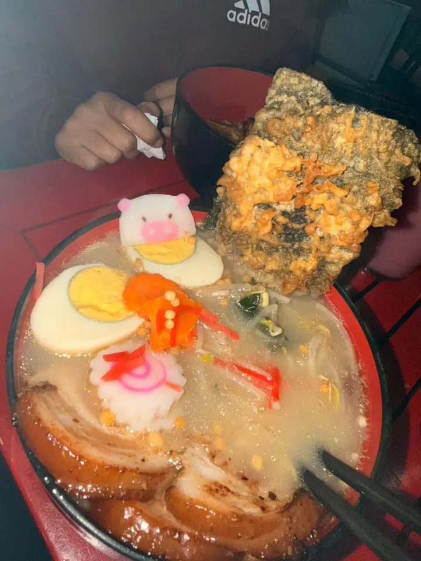
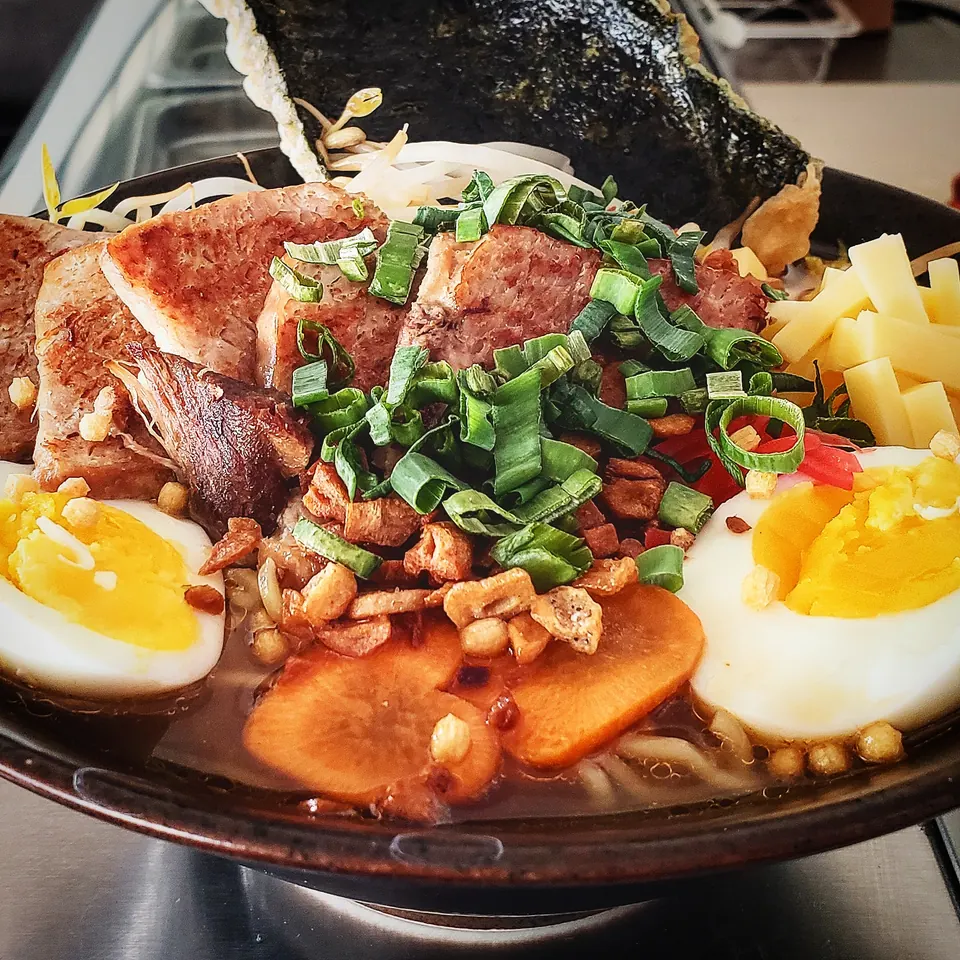
Av. Universidad 1401 · Los Bosques
Caldo caliente,mesa roja.
Ramen, udon y rollos. Todos los días de 1 a 10:30 p.m.
La carta
Lo que se pideen Kimura.
- Miso RamenCaldo de miso con fideo.Pregunta el precioAgregar
- Karey UdonUdon en caldo curry.Pregunta el precioAgregar
- Beef roll con pasta tampicoRollo con carne y tampico.Pregunta el precioAgregar
- Salmoncito hotRollo caliente de salmón.Pregunta el precioAgregar
- California rollEl clásico de siempre.Pregunta el precioAgregar
- EdamamePara empezar la mesa.Pregunta el precioAgregar
Rollos en 2x1 y 3x2. Pregunta cuáles entran hoy.
Carta digital completaTu antojo de hoy
¿Caldoo rollos?
Mueve el palillo. Te decimos qué pedir.
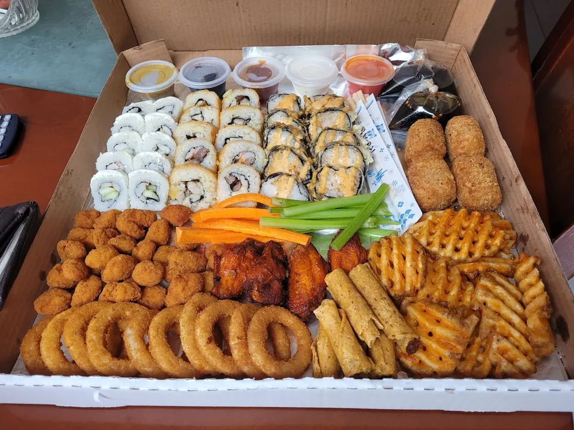
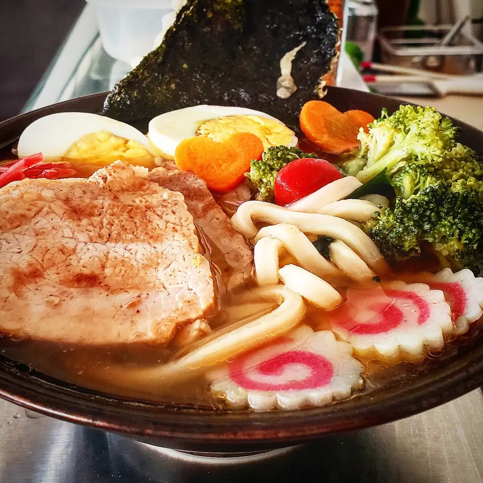
Opiniones
1,477 opiniones,4.1 en Google.
★★★★★
“¡Disfruté muchísimo de un ramen Tonkotsu espectacular, con un caldo delicioso y esos detalles de la panseta bien cocida perfecta!”
Moritax★★★★★Google · hace un año
“Buen lugar, porciones bastas y un sabor muy auténtico.”
moises nava enriquez★★★★★
Comida 5Servicio 5Ambiente 5
Carlos Romo★★★★★
Calificación 5 de 5
Cryses E.M.★★★★★Restaurant Guru
Comida 5Servicio 4Ambiente 4
Jorge Reyes MedinaEl lugar
Así se vetu mesa.
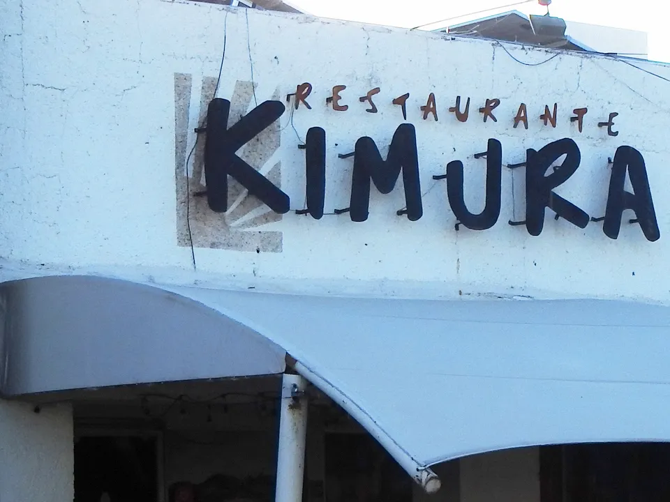
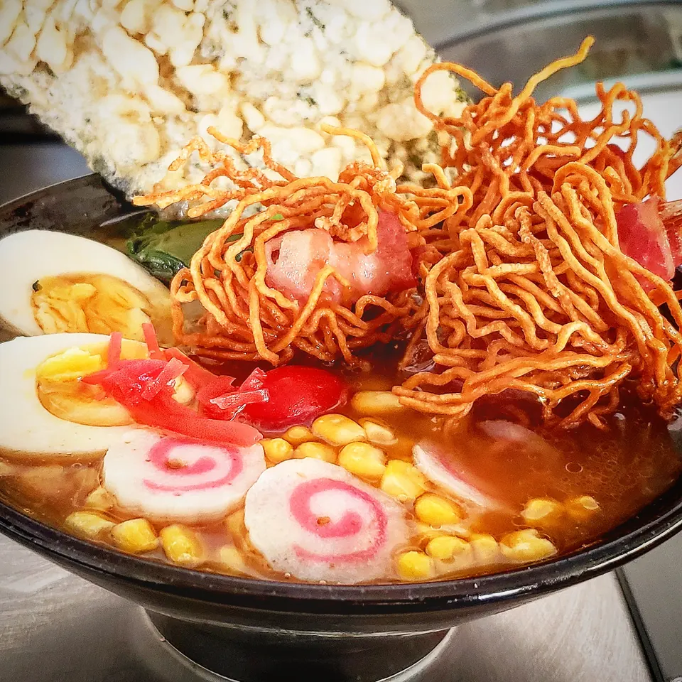
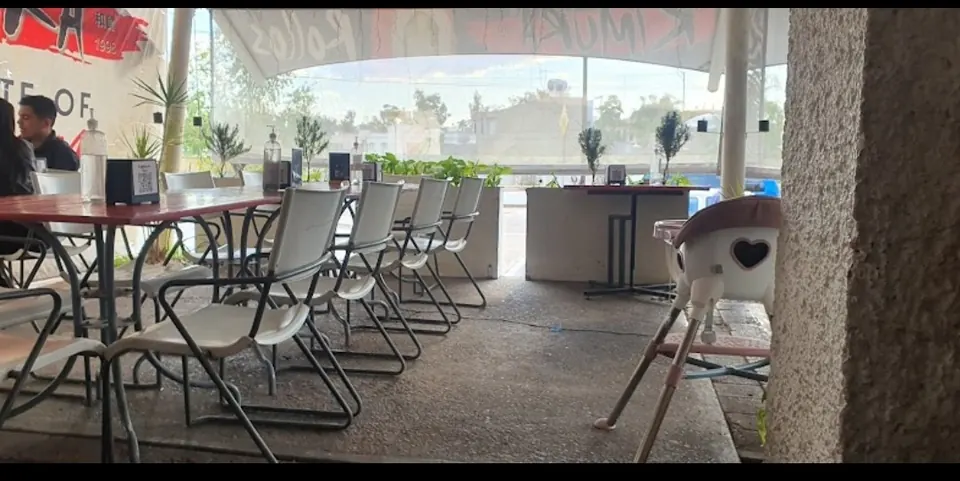
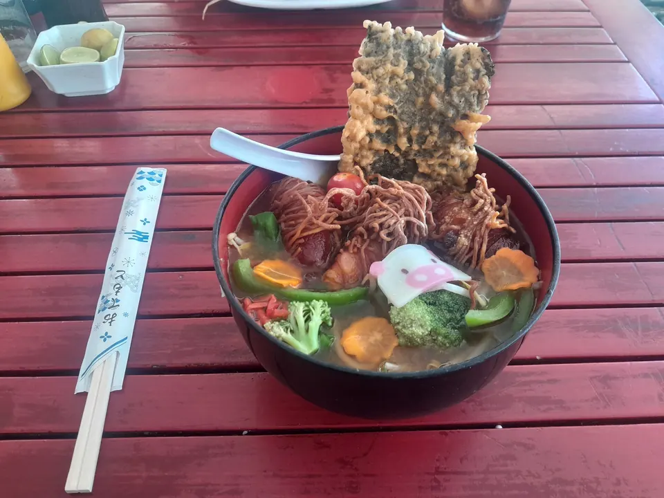
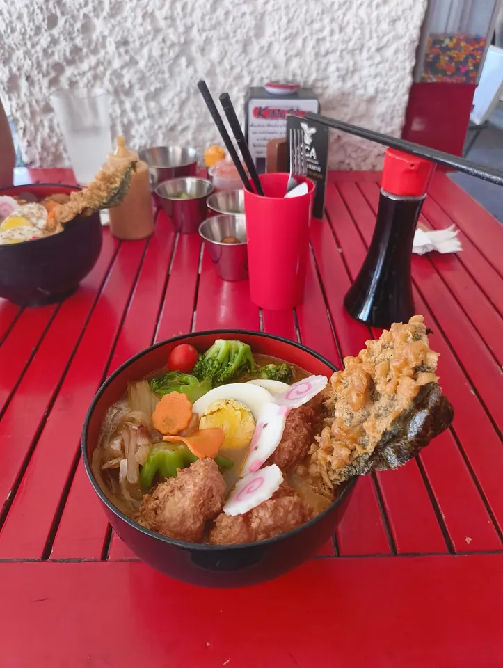
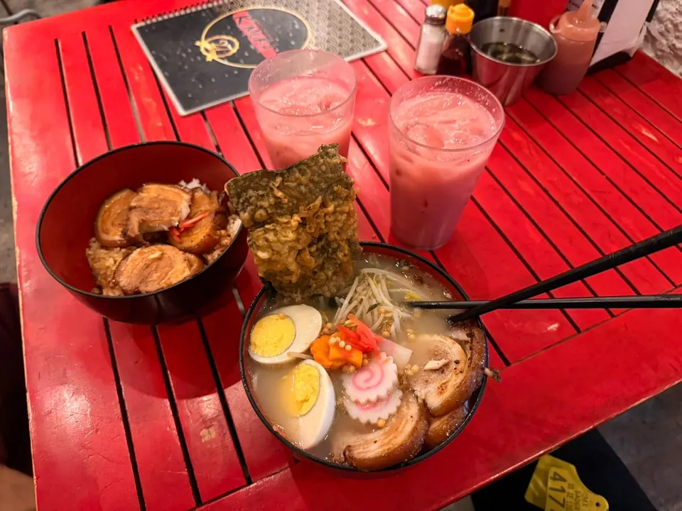
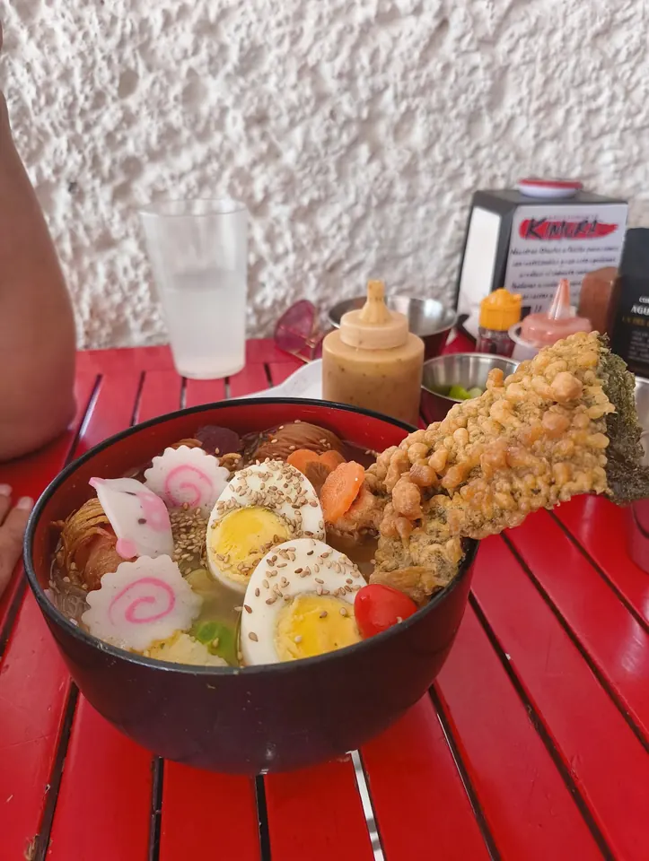
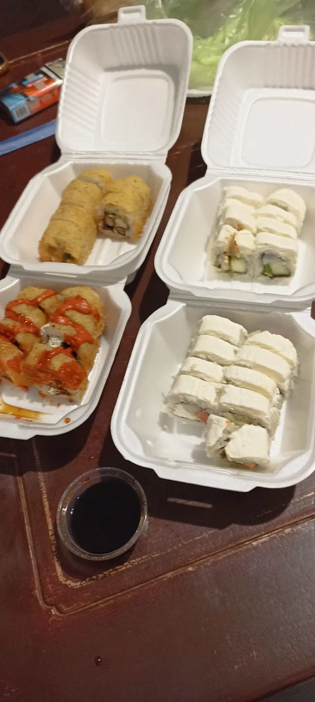
- En el lugarMesas adentro y afuera, con terraza.
- Retiro en la puertaPides y pasas por tu pedido.
- Entrega sin contactoA domicilio, sin bajarte.
- Pedir en líneaDesde la carta digital.
Con terraza, Wi-Fi, estacionamiento amplio y tarjetas.
Visítanos
Pásalea la mesa.
Hoy de 1:00 p.m. a 10:30 p.m.
Av. Universidad 1401Los Bosques, 20120
Aguascalientes, Ags.
- Lunes1:00 p.m. a 10:30 p.m.
- Martes1:00 p.m. a 10:30 p.m.
- Miércoles1:00 p.m. a 10:30 p.m.
- Jueves1:00 p.m. a 10:30 p.m.
- Viernes1:00 p.m. a 10:30 p.m.
- Sábado1:00 p.m. a 10:30 p.m.
- Domingo1:00 p.m. a 10:30 p.m.
Para dejarla lista
Todo listopara completar.
- Los precios de tu carta.
- Tus fotos: de la fachada, el comedor y cada platillo.
- Cómo funciona el 2x1 y el 3x2.
- Tu Instagram para dejarlo bien enlazado.
- Si hay otra sucursal, la sumamos.
Pásanoslo por el mismo chat donde te llegó esta muestra.